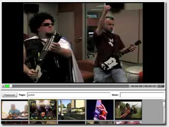

This application opens in a window. If you don't see it, you may need to bring that window to the front.
This YouTube browser demonstrates Streaming Audio/Video support in OpenLaszlo 4. It allows you to search the YouTube database of videos according to criteria you select, to arrange a collection of videos, to control volume, and so forth. Streaming audio and video currently only work in applications compiled to SWF (Flash).